为替代旧工作流程而打造
保留熟悉的操作方式，同时带来现代化控制能力。
Python SSP 在保留熟悉的 Sports Sounds Pro 工作流程的同时，加入了现代控制方式和开放源码。它支持 Windows 以及搭载 Apple 芯片的 macOS，适合希望获得 SSP 核心功能、又不想继续被旧软件绑定的操作人员。
功能特性
经典 SSP 功能
操作人员在旧版 SSP 系统中常用的大多数功能，Python SSP 已经提供。
时间码输出
通过时间码输出驱动外部系统，让演出中的回放同步更加紧密。
Web 遥控
当你离开主控机器时，可以通过浏览器远程控制回放，快速完成操作。
MIDI 控制
可将回放动作映射到 MIDI 硬件，在现场制作环境中实现更直接的手动控制。
界面展示
Python SSP 已包含回放、时间码路由、Web 遥控访问、MIDI 映射、音频按钮编辑、搜索和设置等专用工具。下面展示的是项目中目前已经可用的部分界面。
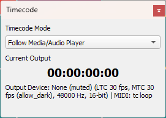
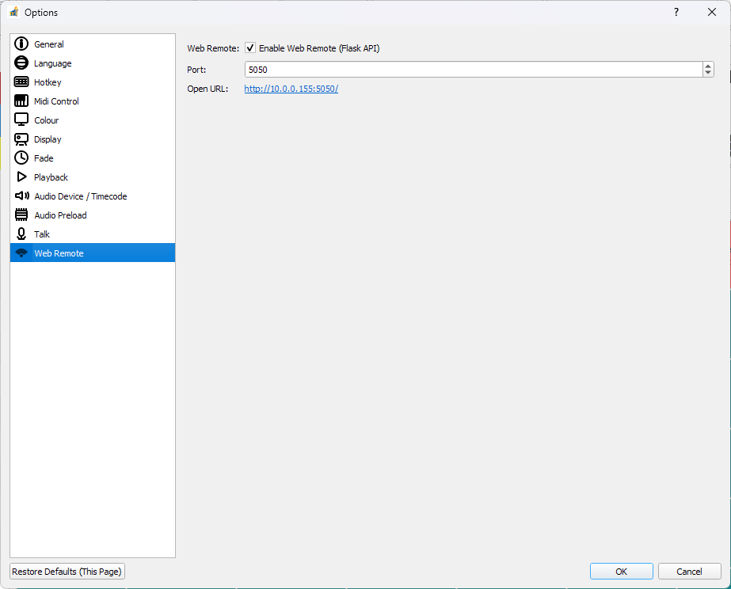
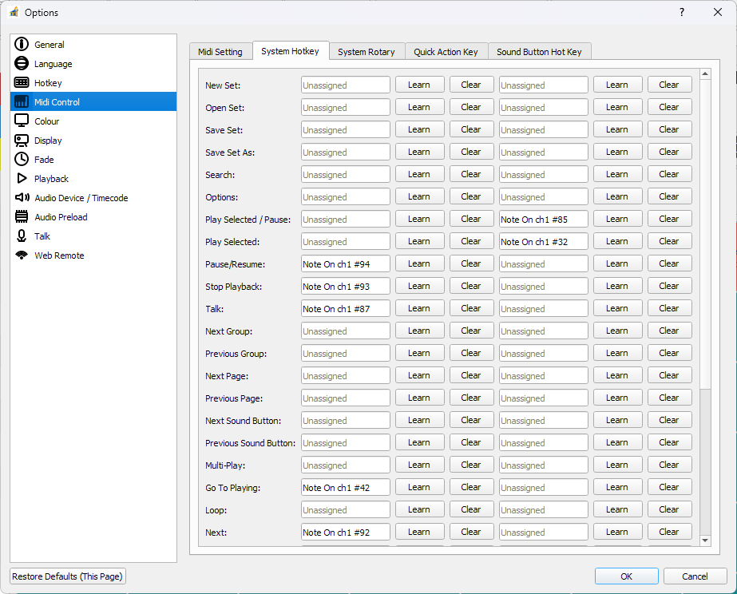
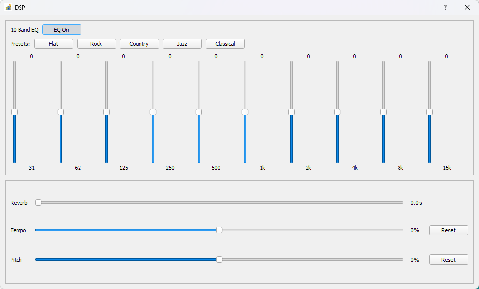
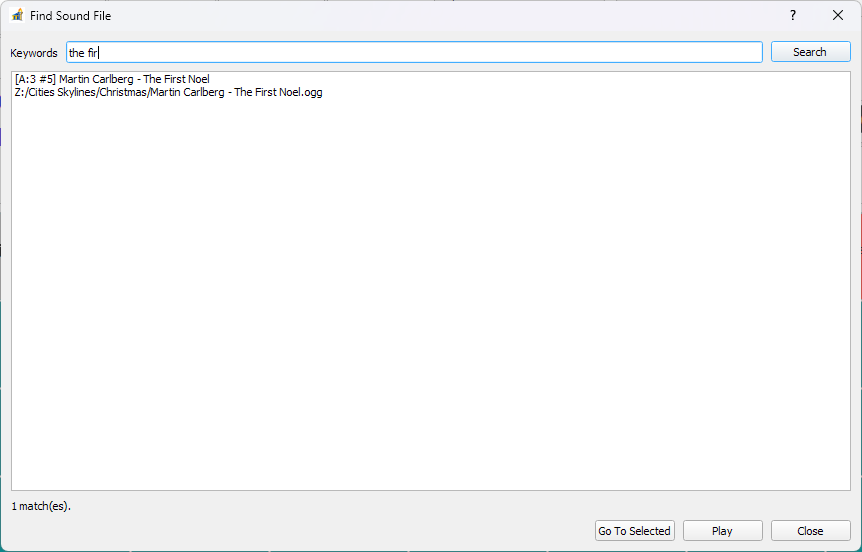
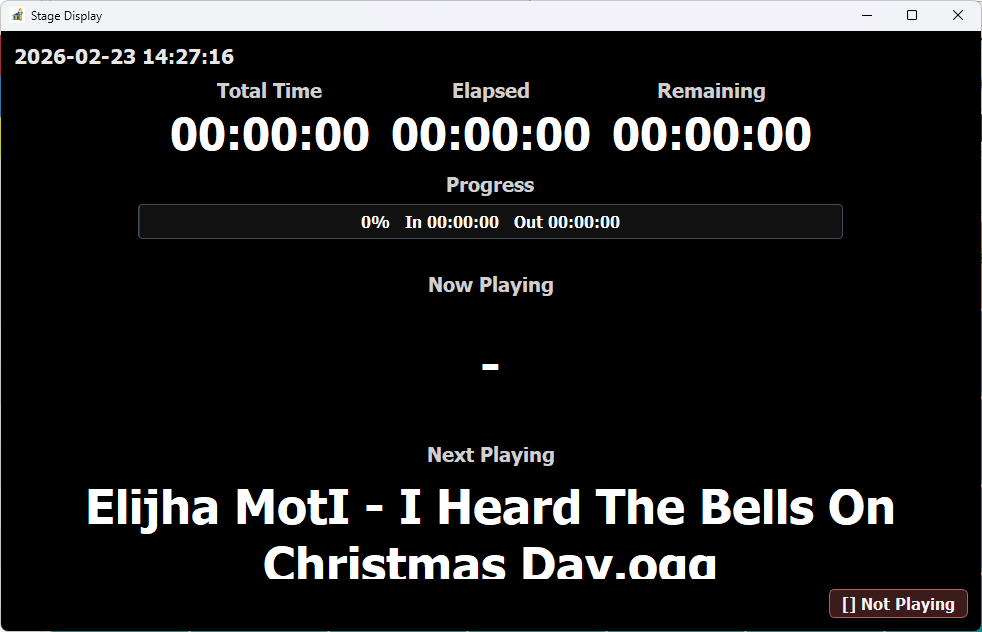
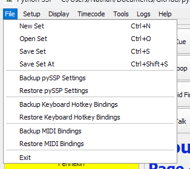
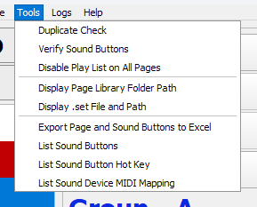
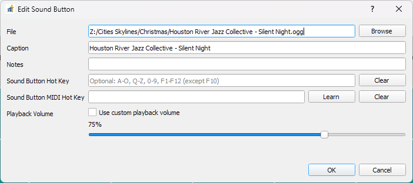
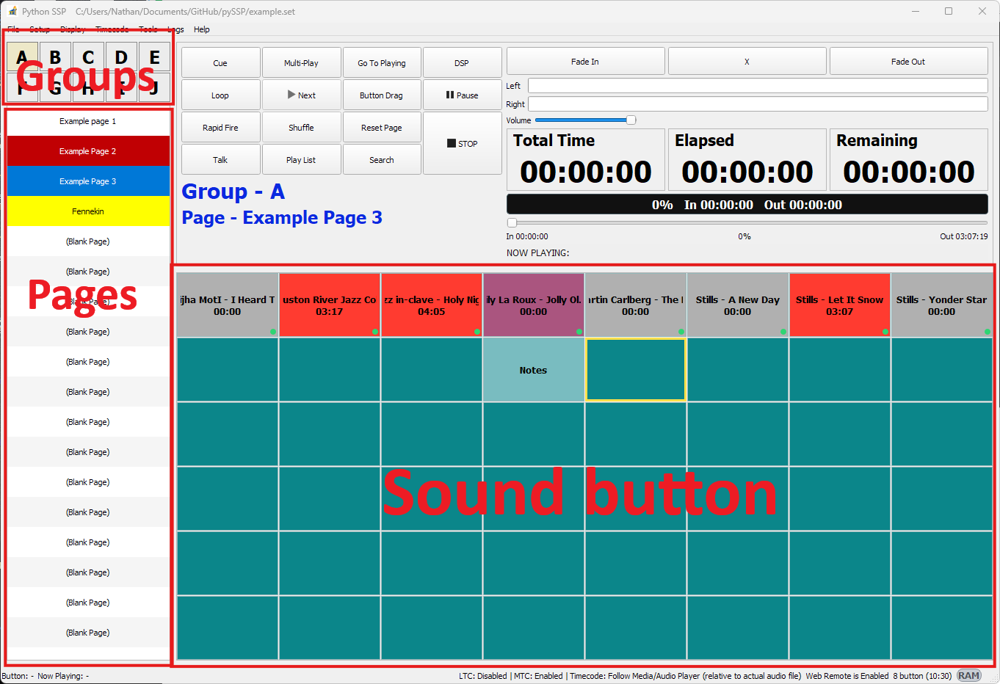
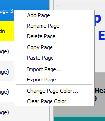
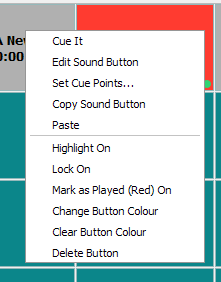